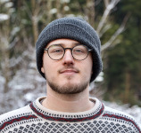
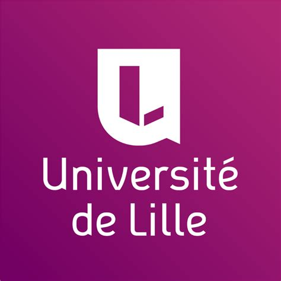

 arnevdk
0000-0002-9367-2986
arnevdk
0000-0002-9367-2986
Leuven, Belgium
Arne Van Den Kerchove
Biomedical engineer, computational neuroscientist
arnevdk
arnevdk
0000-0002-9367-2986
Leuven, Belgium
Professional experience
|  |
Researcher Brain-Computer Interfaces
KU Leuven, University of Lille, Leuven Brain Institute, 2020-2025
Engineering machine learning algorithms for EEG classification,
innovating brain-computer interface paradigms for assistive technologies
and designing, coordinating and performing multi-center clinical end-user studies.
|
|
Neurotechnology and BCI project supervisor
NeuroTech Leuven, 2022-2025
Supervising extracurricular BCI/neurotech student
projects.
|
|
Teaching Assistant Fundamentals of Computer
Science KU Leuven, 2020
Teaching programming and algorithmic reasoning to
first year engineering students.
|
|
Python Developer Mindspeller, 2019
Python flask developer in a spin-off of the KU Leuven
Computational Neuroscience lab that provides marketing
services based on neuroscientifically validated
association studies.
|
|
Freelance Full-stack Web Developer Self employed, 2014-2020
I build and design websites for small start-ups and
organisations with Drupal CMS or Django, combined with
hosting on own server infrastructure.
|
Education
|
Ph.D. in Biomedical Sciences KU Leuven, 2024 |
|
|
Ph.D. in Control Science and Signal Processing University of Lille, 2024
KU Leuven & University of Lille Global Ph.D.
Partnerships 2020 Grant
Thesis: EEG-based Visual Brain-Computer Interface for Gaze-free Communication |
|
M.Sc. in Engineering Sciences: Computer Science,
Cum laude KU Leuven, 2020
Option Artificial Intelligence. Thesis:
Transcription of multiple ERP components from EEG
recordings using spatio-temporal beamforming
|
|
B.Sc. in Informatics KU Leuven, 2017
Minor in natural sciences. Thesis:
Drone simulator and stereoscopic object detection
autopilot
|
← About me
Publications
- Arne Van Den Kerchove, Juliette Meunier, Marie die Moura, Alixe Willemssens, Dorien Geurinckx, Edward Schietecatte, Philip Van Damme, Hakim Si-Mohammed, François Cabestaing, Marc M. Van Hulle. Visual ERP-based brain-computer interface use with severe physical, speech and eye movement impairments: case studies. Journal of NeuroEngineering and Rehabilitation, 2025.
- Arne Van Den Kerchove, Mani Mirsaeedi, Bob Van Dyck, Marc M. Van Hulle. An event-related potenial BCI speller using a wearble, single-channel EEG headset with electrodes on the forehead.. Proceedings of the International Work-Conference on Artificial Neural Networks, 2025.
- Bob Van Dyck, Arne Van Den Kerchove, Marc M. Van Hulle. An Open-Source Implementation of a Closed-Loop Electrocorticographic Brain-Computer Interface Using Micromed, Fieldtrip, and Psychopy. Preprint, 2025.
- Arne Van Den Kerchove. A visual Brain-Computer Interface for gaze-free communication. KU Leuven, University of Lille (Doctoral thesis), 2024.
- Arne Van Den Kerchove, Hakim Si-Mohammed, Marc M. Van Hulle, François Cabestaing. Correcting for ERP latency jitter improves gaze-independent BCI decoding. Journal of Neural Engineering, 2024.
- Arno Libert, Arne Van Den Kerchove, Benjamin Wittevrongel, Marc M. Van Hulle. Analytic beamformer transformation for transfer learning in motion-onset visual evoked potential decoding. Journal of Neural Engineering, 2022.
- Arne Van Den Kerchove, Arno Libert, Benjamin Wittevrongel, Marc M. Van Hulle. Classification of Event-Related Potentials with Regularized Spatiotemporal LCMV Beamforming. Applied Sciences, 2022.
- Arne Van Den Kerchove. Linguistic transcription of EEG responses to sequences of visual stimuli. KU Leuven (Master's Thesis), 2020.
Presentations
Check out some manuscripts, presentations and posters